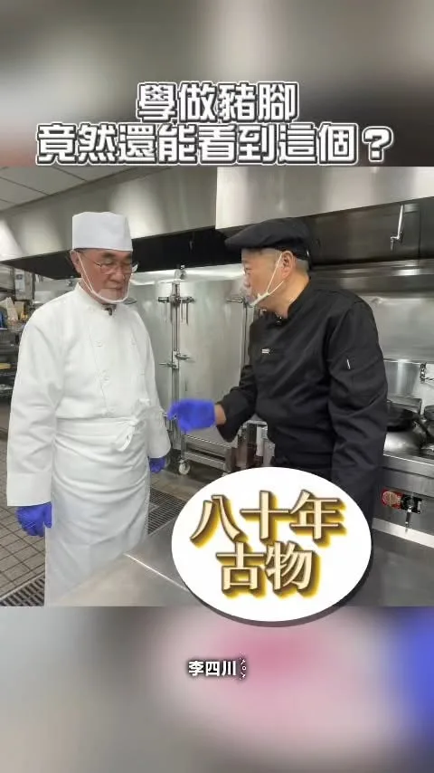
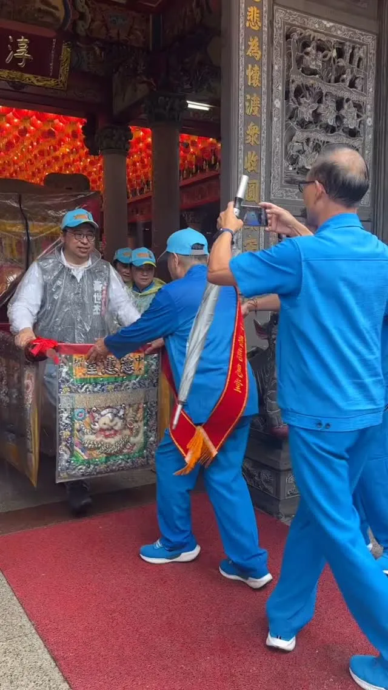

競選總部9/12成立！馬戲團＋文化復興＋青年局 阿純大公開
Posts
競選總部9/12成立！馬戲團＋文化復興＋青年局 阿純大公開

@schuanglawyer:明天晚上19:00，動起來！八德興仁花園夜市✨ 興仁花園夜市是在地人氣夜市，美食選擇超豐富，從鹹酥雞、牛排、滷味到各式甜點小吃，還有不少遊戲攤位，越晚越熱鬧🔥 明晚世杰來到興仁花園夜市，和大家一起逛夜市、吃美食、感受八德夜晚的熱鬧活力！心八德，動起來💖
每次不同的行程都會有各式結論與收穫，這天啟臣在八仙山林場宿舍群進行考察時，除了思考到未來這些歷史建築群修復後的活化、融入市民生活，也在文創商品區意外發現這隻可愛的臺灣特有亞種「白面鼯鼠」，我立刻帶著他一起去趕下一個行程！ 未來，不只是把這些臺灣在地文創帶回家收藏，啟臣更要把我們在地的臺中味帶到國際上，讓國際友人感受到臺中的創意、熱情及各項軟硬實力，持續努力 #讓世界看見臺灣！ #臺中味 #臺中Way #Taichungway #文化味 #文化搭臺 #經濟唱戲 #臺中啟程 #打造旗艦城 #文創 #能在地能國際 #讓臺中走向國際

我前幾天是來跟我們新北名廚王永宗學做豬腳的，結果師傅拿出壓箱寶。 說實在，雖然大家叫我川伯，但沒想到看到一只比我還老的盤子。 東西能留這麼久，是因為做的人不馬虎，留的人捨不得丟。 手藝也一樣。台菜的辦桌文化，我想幫新北留著。

今晚的南崁溪畔水燈點點，映照著整座城市百年來的虔誠與慈悲。 世杰傍晚來到景福宮參拜祈福，沿路向市民朋友致意。遶境的尾聲，我也來到溪畔，跟大家一起把水燈放入溪流，祈願四方平安、風調雨順。 景福宮和福德宮的中元慶典，傳承超過一世紀，水燈排遶境與放水燈，早已超越慰藉孤魂、慈悲普渡的傳統意涵，而是代代相傳，凝聚桃園十五街庄跟各大姓氏宗親的情感記憶。 現在的桃園，是擁有235萬人的大城，人口規模即將超越首都台北。在城市大步向前、推動各項建設的同時，世杰會更用心守護在地文化底蘊，顧好我們的根，讓桃園成為一座進步、繁榮又有歷史溫度的宜居之城。

來到桃園大廟，參加慶讚中元水燈排車遶境！ 等等有市民朋友會去放水燈嗎？

🎸喚醒百年鐵道記憶！ 新民街倉庫群轉身迎向多元藝文新舞台🚂 興建於日治時期與戰後初期的新民街倉庫群，曾是中部鐵道貨運的重要心臟，更承載著舊城區無數居民的打拚歲月與生活記憶，目前正迎來修復活化的關鍵時刻！ 我認為歷史建築不該只是冷冰冰的靜態展示，而是要真正「活」在市民的日常裡。日前啟臣和許多臺中在地的音樂人、策展夥伴深聊，大家都對這裡充滿期待！未來我希望新民街倉庫群能朝多功能展演方向規劃，兼顧文化保存、流行音樂、Live House與各類藝文演出，讓老倉庫注入新靈魂，成為中臺灣最具爆發力的青年文化聚落！ 未來，期待能以鐵道為軸線，串聯周邊歷史亮點，打造一條兼具歷史、人文與觀光的文化廊帶，讓大家走進舊城區，不只看見臺中的歷史，更能感受在地源源不絕的文化生命力！ #新民街倉庫群 #鐵道文化 #舊城復興 #臺中味 #文化味 #臺中啟程 #打造旗艦城


陪指南宮走過火災，直到重建的那一天。 我在政大念書的時候，就常常到指南宮。這裡承載著我很多求學時期的回憶；成家之後，也常帶著太太、孩子和家人來走走、參拜。 我相信，對許多市民朋友和信眾來說，指南宮不只是一座廟宇，更是一份共同的記憶。每年的三獻大典是地方盛事，許多國內外宗教團體與重要人士也都會齊聚在這裡。指南宮更是臺北最具指標性的廟宇之一，也是全臺灣呂仙祖信仰的重鎮。 昨天發生火災，所幸沒有造成人員傷亡，是不幸中的大幸。消防局接獲通報後，第一時間投入救災，總計動員超過106人次、27輛消防車，也有義消夥伴及無人機隊共同協助掌握火勢，最終在凌晨12時09分將火勢撲滅。 我要再次感謝所有奮勇救災的消防弟兄及義消夥伴。 今天一早，我到現場和高超文主委、廟方及市府相關單位討論後，也做出幾項指示。 第一，臺北市政府立即成立跨局處府級單一窗口，由林奕華副市長督導、民政局主責，整合消防、文化、都發、建管、大地、區公所等單位，全力協助後續工作。 第二，待火災調查完成、確認符合安全規範後，立即進行鑑定。除了結構安全，也會與廟方、文化局共同確認具有歷史價值、應優先保存的結構，做好完整的鑑定與紀錄。 第三，市府會在符合安全標準的前提下，提供復原重建所需的專案行政協助，加速後續審查。無論是建築、土地、寺廟登記等不同層面，都由市府團隊全力協助。 我也向高超文主委表達，從今天開始，無論是現場清理、火災調查，還是後續復原重建，臺北市政府都會一路陪著指南宮，直到重建的那一天。

@hammer__lee:麵線拉得越長，對我來說，是代表新北幸福綿延不絕。 拿鐵錘的遇上掌勺的，同樣四十多年的經歷，我們一起煮，成就的是一碗新北人情味，一道城市佳餚。 「豬腳麵線」一道屬於台灣的料理，其實很厚工，我今天第一次知道，蔥要炸、麵線要蒸，要滷好幾個小時，才有那一口美味。 今天我換上廚師服，在王永宗「阿宗師」主廚的教導下，當一日的總鋪師，做著他的拿手菜，說實在，都是他在打pass，才有這樣的成果，揪歹勢啦。 術業有專攻，一切不容易，事事不簡單。 如何讓「老菜」有「新意」，讓年輕人願意學，將台灣招牌菜傳承下去，是我們這個時代的責任。 台菜、辦桌文化，在我們的日常裡，是一路以來生活的記憶，其實我在跑攤的時候，看到好多年輕人，都愛吃流水席，這是台灣人懂的，也是發揚世界的。 未來我會結合推廣農漁特產，讓新北的特色好味道，讓更多人看見。 端上桌的，是咱新北人的寶貝。
石岡熱氣球嘉年華最終日 來臺中山城品嚐石岡在地農特產 🍄✨ #2026臺中石岡熱氣球嘉年華 今天最後一天！如果這次沒搭乘到熱氣球的朋友也千萬別失望，臺中山城的好山好水與豐富物產，隨時都張開雙臂歡迎大家！ 石岡得天獨厚的氣候與優質水源，孕育出許多頂級農特產： 香菇與木耳-肉厚味濃、富含多醣體與膠質，不論煮湯、入菜都是養生首選，尤其是消暑解渴低熱量的銀耳露👍 🍊超人氣柑橘11月即將登場-我們山城的柑橘汁多甜美、酸甜比例恰到好處，啟臣搶先預告，產季一到大家一定要來品嚐當季的鮮甜！ 把握假期或隨時安排一趟山城微旅行，深入石岡街區，品嚐最道地的在地農產，感受中臺灣最純樸熱情的 #人情味！ #農家子弟 #臺中味 #臺中Way #石岡農特產 #優質柑橘 #豐原山城 #幸福加乘 #臺中啟程 #打造旗艦城

@schuanglawyer:傳承百年的景福宮中元祭典，是桃園特色文化，凝聚了一代代桃園人的共同記憶。 世杰會和大家一起努力，不只要讓心桃園動起來，更要守護在地文化，讓桃園在進步繁榮的同時，也有令人眷戀的溫度💖

明天晚上19:00，動起來！八德興仁花園夜市✨ 興仁花園夜市是在地人氣夜市，美食選擇超豐富，從鹹酥雞、牛排、滷味到各式甜點小吃，還有不少遊戲攤位，越晚越熱鬧🔥 明晚世杰來到興仁花園夜市，和大家一起逛夜市、吃美食、感受八德夜晚的熱鬧活力！心八德，動起來💖

TEAM TAIWAN 拓荒探險隊第三彈角色曝光！ 猜猜看這次登場的是誰？沒錯，就是大家最熟悉的 #水獺媽媽✨ 這次我和民進黨的縣市長候選人們化身「TEAM TAIWAN 拓荒探險隊」，和大家走遍全台各地。水獺媽媽帶著大聲公和滿滿裝備出發，一起從淡江大橋、野柳一路探索到九份，把新北的交通建設、山海美景、特色老街通通走一遍！ 新北有山、有海，更有29區各自精彩的地方特色。未來，我要推動 #新皇冠海岸、#鑽石山城 觀光政見，整合山海、老街、商圈、漁港等豐富資源，打造屬於新北自己的觀光品牌，讓更多國內外旅客愛上新北市，也讓市民以自己的城市為榮。 從交通、產業、觀光，到居住環境、教育和照顧，我會繼續帶著「溫暖、創新、會做事」的精神，用創新方法打造更好的新北市，讓建設持續進步、生活品質一起升級。 下一個登場的會是哪位角色呢👀 一起期待接下來的驚喜吧！

@schuanglawyer:今晚的南崁溪畔水燈點點，映照著整座城市百年來的虔誠與慈悲。 世杰傍晚來到景福宮參拜祈福，沿路向市民朋友致意。遶境的尾聲，我也來到溪畔，跟大家一起把水燈放入溪流，祈願四方平安、風調雨順。 景福宮和福德宮的中元慶典，傳承超過一世紀，水燈排遶境與放水燈，早已超越慰藉孤魂、慈悲普渡的傳統意涵，而是代代相傳，凝聚桃園十五街庄跟各大姓氏宗親的情感記憶。 現在的桃園，是擁有235萬人的大城，人口規模即將超越首都台北。在城市大步向前、推動各項建設的同時，世杰會更用心守護在地文化底蘊，顧好我們的根，讓桃園成為一座進步、繁榮又有歷史溫度的宜居之城。

@schuanglawyer:來到桃園大廟，參加慶讚中元水燈排車遶境！ 等等有市民朋友會去放水燈嗎？

地底下沒有光。台灣的經濟，曾經是他們用命換上來的。 礦工前輩「折腰再折腰」，撐起的是幾代人的生活，是咱新北猴硐的驕傲。 今天我到猴硐礦工文史館，拜訪礦長周朝南，還有許多礦工前輩，以及為礦工文化保存盡心盡力的志工們。百年的礦業歷史，他們講起來依舊如黑金般閃閃發亮。 我當起一日礦工，整裝起來，倒真像我過去的裝扮，只是採礦頭燈安全帽、鏟子、裝渣機等等，各個不同，是完全不一樣的領域。 礦長和幹部以及志工們，對於煤礦文化的保存，他們把歷史顧住了。接下來，換我們把人帶進來。 日前我提出「水金九以及猴硐台車復駛計畫」，要讓所有民眾和孩子，都能了解文化，體驗歷史，更要帶動觀光，讓更多人看見猴硐。 過去我時常進出隧道及下水道，和礦工前輩或許有相同的「地底經驗」，我很清楚黑暗、高溫、高濕的工作環境，是多麼辛苦，那種克難與堅強，是我一輩子要向礦工前輩學習的課題。 礦工前輩說：入坑，命是土地公的；出坑，命才是自己的。 過去，他們把命交給天地，未來，猴硐的下一段路，我來鋪。

🎸喚醒百年鐵道記憶！ 新民街倉庫群轉身迎向多元藝文新舞台🚂 興建於日治時期與戰後初期的新民街倉庫群，曾是中部鐵道貨運的重要心臟，更承載著舊城區無數居民的打拚歲月與生活記憶，目前正迎來修復活化的關鍵時刻！ 我認為歷史建築不該只是冷冰冰的靜態展示，而是要真正「活」在市民的日常裡。日前啟臣和許多臺中在地的音樂人、策展夥伴深聊，大家都對這裡充滿期待！未來我希望新民街倉庫群能朝多功能展演方向規劃，兼顧文化保存、流行音樂、Live House與各類藝文演出，讓老倉庫注入新靈魂，成為中臺灣最具爆發力的青年文化聚落！ 未來，期待能以鐵道為軸線，串聯周邊歷史亮點，打造一條兼具歷史、人文與觀光的文化廊帶，讓大家走進舊城區，不只看見臺中的歷史，更能感受在地源源不絕的文化生命力！ #新民街倉庫群 #鐵道文化 #舊城復興 #臺中味 #文化味 #臺中啟程 #打造旗艦城

我今天是來跟我們新北名廚王永宗學做豬腳的，結果師傅拿出壓箱寶。 說實在，雖然大家叫我川伯，但沒想到看到一只比我還老的盤子。 東西能留這麼久，是因為做的人不馬虎，留的人捨不得丟。 手藝也一樣。台菜的辦桌文化，我想幫新北留著。

麵線拉得越長，對我來說，是代表新北幸福綿延不絕。 拿鐵錘的遇上掌勺的，同樣四十多年的經歷，我們一起煮，成就的是一碗新北人情味，一道城市佳餚。 「豬腳麵線」一道屬於台灣的料理，其實很厚工，我今天第一次知道，蔥要炸、麵線要蒸，要滷好幾個小時，才有那一口美味。 今天我換上廚師服，在王永宗「阿宗師」主廚的教導下，當一日的總鋪師，做著他的拿手菜，說實在，都是他在打pass，才有這樣的成果，揪歹勢啦。 術業有專攻，一切不容易，事事不簡單。 如何讓「老菜」有「新意」，讓年輕人願意學，將台灣招牌菜傳承下去，是我們這個時代的責任。 台菜、辦桌文化，在我們的日常裡，是一路以來生活的記憶，其實我在跑攤的時候，看到好多年輕人，都愛吃流水席，這是台灣人懂的，也是發揚世界的。 未來我會結合推廣農漁特產，讓新北的特色好味道，讓更多人看見。 端上桌的，是咱新北人的寶貝。

石岡熱氣球嘉年華最終日 來臺中山城品嚐石岡在地農特產 🍄✨ #2026臺中石岡熱氣球嘉年華 今天最後一天！如果這次沒搭乘到熱氣球的朋友也千萬別失望，臺中山城的好山好水與豐富物產，隨時都張開雙臂歡迎大家！ 石岡得天獨厚的氣候與優質水源，孕育出許多頂級農特產： 香菇與木耳-肉厚味濃、富含多醣體與膠質，不論煮湯、入菜都是養生首選，尤其是消暑解渴低熱量的銀耳露👍 🍊超人氣柑橘11月即將登場-我們山城的柑橘汁多甜美、酸甜比例恰到好處，啟臣搶先預告，產季一到大家一定要來品嚐當季的鮮甜！ 把握假期或隨時安排一趟山城微旅行，深入石岡街區，品嚐最道地的在地農產，感受中臺灣最純樸熱情的 #人情味！ #農家子弟 #臺中味 #臺中Way #石岡農特產 #優質柑橘 #豐原山城 #幸福加乘 #臺中啟程 #打造旗艦城

古蹟可以不只是古蹟！何欣純談英國求學悟出的活化小tips
每次不同的行程都會有各式結論與收穫，這天啟臣在八仙山林場宿舍群進行考察時，除了思考到未來這些歷史建築群修復後的活化、融入市民生活，也在文創商品區意外發現這隻可愛的臺灣特有亞種「白面鼯鼠」，我立刻帶著他一起去趕下一個行程！ 未來，不只是把這些臺灣在地文創帶回家收藏，啟臣更要把我們在地的臺中味帶到國際上，讓國際友人感受到臺中的創意、熱情及各項軟硬實力，持續努力 #讓世界看見臺灣！ #臺中味 #臺中Way #Taichungway #文化味 #文化搭臺 #經濟唱戲 #臺中啟程 #打造旗艦城 #文創 #能在地能國際 #讓臺中走向國際
TEAM TAIWAN 拓荒探險隊第三彈角色曝光！ 猜猜看這次登場的是誰？沒錯，就是大家最熟悉的 #水獺媽媽✨ 這次我和民進黨的縣市長候選人們化身「TEAM TAIWAN 拓荒探險隊」，和大家走遍全台各地。水獺媽媽帶著大聲公和滿滿裝備出發，一起從淡江大橋、野柳一路探索到九份，把新北的交通建設、山海美景、特色老街通通走一遍！ 新北有山、有海，更有29區各自精彩的地方特色。未來，我要推動 #新皇冠海岸、#鑽石山城 觀光政見，整合山海、老街、商圈、漁港等豐富資源，打造屬於新北自己的觀光品牌，讓更多國內外旅客愛上新北市，也讓市民以自己的城市為榮。 從交通、產業、觀光，到居住環境、教育和照顧，我會繼續帶著「溫暖、創新、會做事」的精神，用創新方法打造更好的新北市，讓建設持續進步、生活品質一起升級。 下一個登場的會是哪位角色呢👀 一起期待接下來的驚喜吧！

今晚的南崁溪畔水燈點點，映照著整座城市百年來的虔誠與慈悲。 世杰傍晚來到景福宮參拜祈福，沿路向市民朋友致意。遶境的尾聲，我也來到溪畔，跟大家一起把水燈放入溪流，祈願四方平安、風調雨順。 景福宮和福德宮的中元慶典，傳承超過一世紀，水燈排遶境與放水燈，早已超越慰藉孤魂、慈悲普渡的傳統意涵，而是代代相傳，凝聚桃園十五街庄跟各大姓氏宗親的情感記憶。 現在的桃園，是擁有235萬人的大城，人口規模即將超越首都台北。在城市大步向前、推動各項建設的同時，世杰會更用心守護在地文化底蘊，顧好我們的根，讓桃園成為一座進步、繁榮又有歷史溫度的宜居之城。

來到桃園大廟，參加慶讚中元水燈排車遶境！ 等等有市民朋友會去放水燈嗎？


百年信仰延續，為高雄祈福 連日豪大雨影響高雄，近期天候仍不穩定。今天來到小港龍湖宮，參與大士爺開光點眼儀式，與地方鄉親一同誠心上香祈福。 祈求風雨早歇、合境平安，也祝福今年大士爺普渡祭典圓滿順利，市民朋友一切順心。 黃彥毓 前鎮小港 我願意 吳銘賜Wu Ming-tsz 市議員李順進 陳致中 Chih-Chung Chen 黃敬雅 Huang Ching-Ya 吳昱鋒-鎮港小前鋒

陪指南宮走過火災，直到重建的那一天。 我在政大念書的時候，就常常到指南宮。這裡承載著我很多求學時期的回憶；成家之後，也常帶著太太、孩子和家人來走走、參拜。 我相信，對許多市民朋友和信眾來說，指南宮不只是一座廟宇，更是一份共同的記憶。每年的三獻大典是地方盛事，許多國內外宗教團體與重要人士也都會齊聚在這裡。指南宮更是臺北最具指標性的廟宇之一，也是全臺灣呂仙祖信仰的重鎮。 昨天發生火災，所幸沒有造成人員傷亡，是不幸中的大幸。消防局接獲通報後，第一時間投入救災，總計動員超過106人次、27輛消防車，也有義消夥伴及無人機隊共同協助掌握火勢，最終在凌晨12時09分將火勢撲滅。 我要再次感謝所有奮勇救災的消防弟兄及義消夥伴。 今天一早，我到現場和高超文主委、廟方及市府相關單位討論後，也做出幾項指示。 第一，臺北市政府立即成立跨局處府級單一窗口，由林奕華副市長督導、民政局主責，整合消防、文化、都發、建管、大地、區公所等單位，全力協助後續工作。 第二，待火災調查完成、確認符合安全規範後，立即進行鑑定。除了結構安全，也會與廟方、文化局共同確認具有歷史價值、應優先保存的結構，做好完整的鑑定與紀錄。 第三，市府會在符合安全標準的前提下，提供復原重建所需的專案行政協助，加速後續審查。無論是建築、土地、寺廟登記等不同層面，都由市府團隊全力協助。 我也向高超文主委表達，從今天開始，無論是現場清理、火災調查，還是後續復原重建，臺北市政府都會一路陪著指南宮，直到重建的那一天。
明天早上9:00，動起來！埔心市場掃街✨ 楊梅的埔心市場是在地居民日常採買的重要去處，客家傳統與眷村飲食文化在這裡自然交會。從客家傳統點心、中式早點到各式特色小吃，周邊還藏著不少低調老店、老饕才知道的隱藏版美食，走一趟就能感受到埔心多元又豐富的生活滋味👍🏻 明早9:00世杰到埔心市場和大家問早！心楊梅，動起來💖

麵線拉得越長，對我來說，是代表新北幸福綿延不絕。 拿鐵錘的遇上掌勺的，同樣四十多年的經歷，我們一起煮，成就的是一碗新北人情味，一道城市佳餚。 「豬腳麵線」一道屬於台灣的料理，其實很厚工，我今天第一次知道，蔥要炸、麵線要蒸，要滷好幾個小時，才有那一口美味。 今天我換上廚師服，在王永宗「阿宗師」主廚的教導下，當一日的總鋪師，做著他的拿手菜，說實在，都是他在打pass，才有這樣的成果，揪歹勢啦。 術業有專攻，一切不容易，事事不簡單。 如何讓「老菜」有「新意」，讓年輕人願意學，將台灣招牌菜傳承下去，是我們這個時代的責任。 台菜、辦桌文化，在我們的日常裡，是一路以來生活的記憶，其實我在跑攤的時候，看到好多年輕人，都愛吃流水席，這是台灣人懂的，也是發揚世界的。 未來我會結合推廣農漁特產，讓新北的特色好味道，讓更多人看見。 端上桌的，是咱新北人的寶貝。

@schuanglawyer:風雨無阻，母娘護佑！ 中壢慈惠堂一年一度母娘祈安賜福出巡遶境，我跟市民朋友並肩同行。祈求遇水則發，母娘庇佑大家合境平安、桃園更好🙏